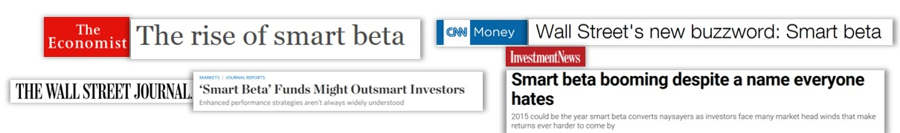
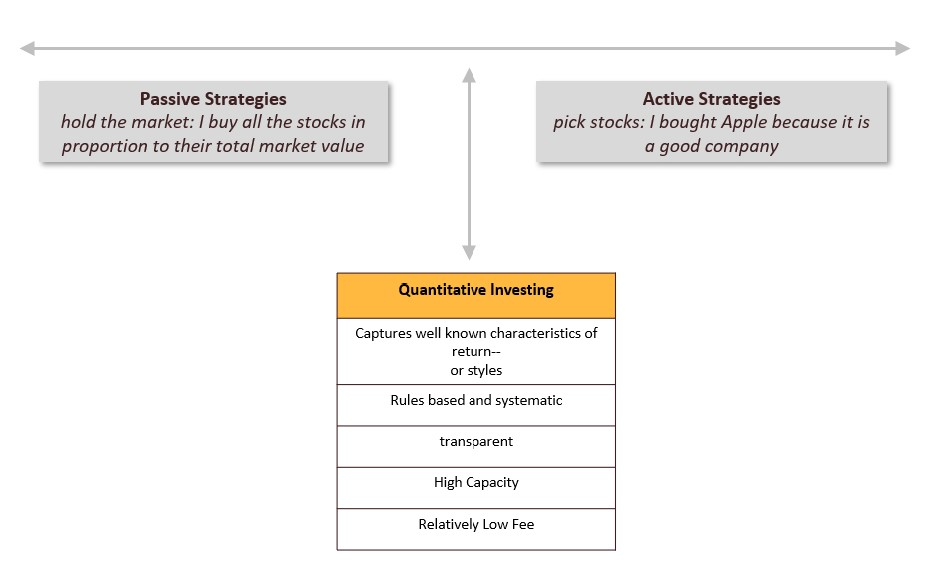
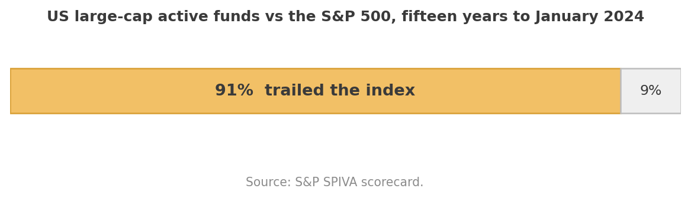
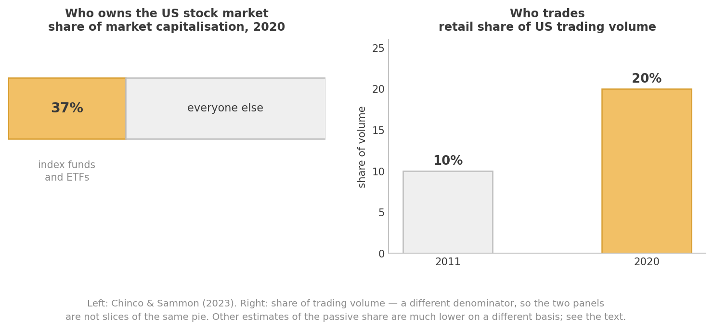
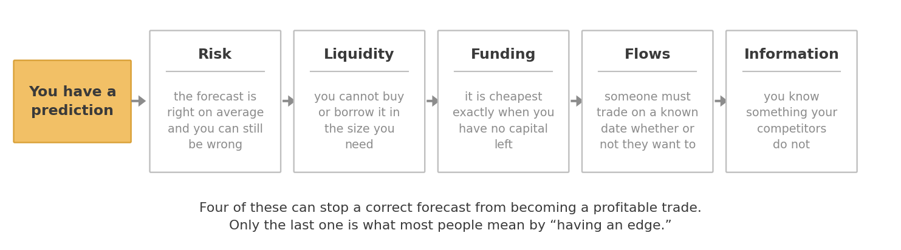
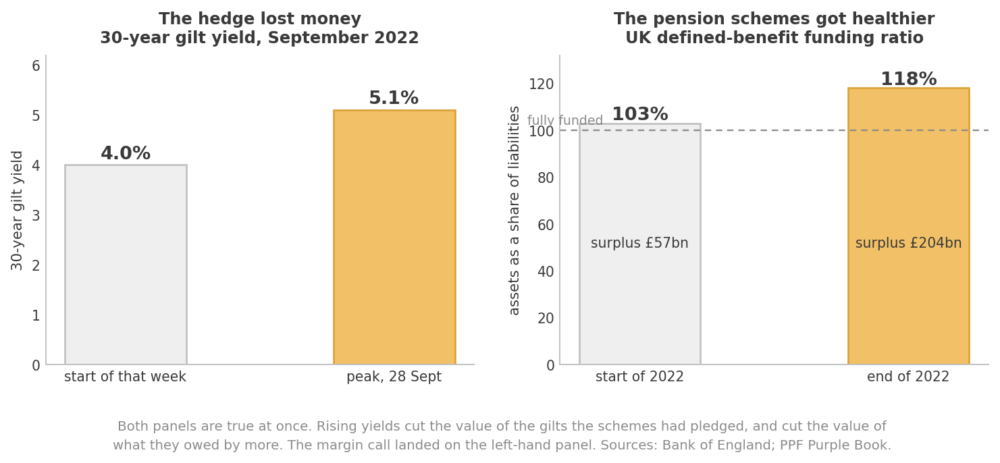
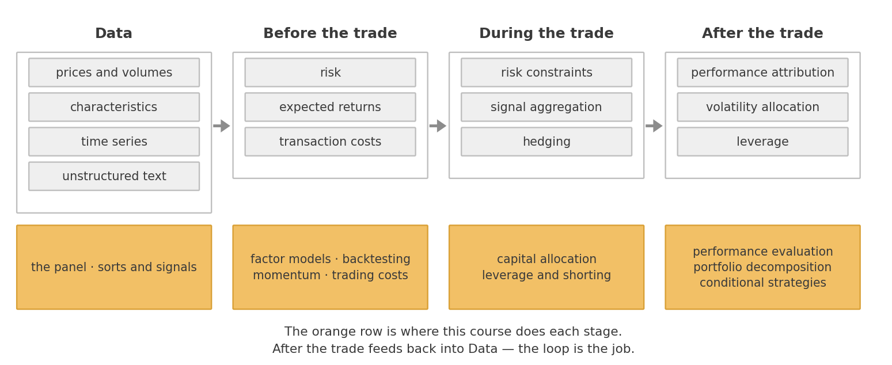

What is Data Driven Investing?#
Read this on your own before we start. It is the map for the whole term: what we are trading, who is on the other side, where the money comes from, and how the pieces of the course fit together.
Three questions this chapter answers
What is quantitative investing, at its core?
Who else is in the market, and why does that matter to you?
Where do excess returns actually come from?
Parts of the second and third sections draw on Chapter 1 of Giuseppe Paleologo’s The Elements of Quantitative Investing, which is the best short treatment of this material I know and which is on the reading list for your final project.
Part I — The core#
Data Driven investing is about leveraging large and diverse datasets through exploration, prediction, inference, and theory to reach better, systematically-driven investment decisions. At its core it involves identifying patterns in asset prices and exploiting those insights using robust statistical methods and computational techniques.
Start with the narrow version — quantitative investing — and we will get to the broader one at the end.
This is a class about investing in practice.
We will learn how to use data to guide investment decisions.
Focus on how to organize, analyze, and investigate financial data sets.
We will learn the state of the art in quantitative investing, and learn how to evaluate new quantitative strategies.
Develop tools and programming skills that can be applied widely: asset management, investment banking, corporate finance, strategy.
Between passive and active#
Most traditional quantitative investing is associated with factor investing: using data and theory to systematically construct portfolios, with a focus on the statistical properties of asset returns — means, standard deviations, covariances — and on using fundamental data in an algorithmic fashion. The industry sometimes calls this smart beta.

Factor investing sits right between strictly passive strategies that just hold the market and purely active strategies where managers pick assets based on judgment.

What is distinctive about quantitative investing in its best form is that it uses a lot of data, is back-tested against history, and maintains a fierce interaction between capital allocation and research on signal quality. You do not just find a pattern; you decide how much to bet on it, and you keep re-deciding.
Where it came from#
In some ways the father of quantitative investing is Jack Bogle, who operationalized the index fund in a way that was cheap and accessible. This essentially built the conditions for showing that active managers were mostly big losers relative to an easy, cheap index fund, and induced the shift from a personality-centric culture to a data-centric one.
Jack Bogle, founder of Vanguard, is the father of market-cap investing
The evidence he made visible is still the single most quoted fact in this industry:

Over fifteen years, roughly nine out of ten US large-cap active funds failed to beat the index they were measured against. One year of outperformance turns out not to predict the next. That is the benchmark any strategy in this course has to clear, and it is a higher bar than it looks.
Eugene Fama and Kenneth French are the academic founders who in many ways were well ahead of what the industry was doing at the time. They developed or perfected most of the techniques used to construct and evaluate quant strategies, and were instrumental in building clean and organized data repositories for financial data — which is why you will be downloading data from Ken French’s website in week one.
Gene Fama and Ken French
Part II — The territory#
Knowing the techniques is not enough. You also need to know what you are allowed to trade, who you are trading against, and why there is any money in it. This is the part most courses skip.
What you can trade#
We are concerned with claims that are standardized and liquid.
Standardized means the attributes of the contract are clearly defined and known to everyone: one Apple share is indistinguishable from another. Liquid means you can buy and sell in the size you need, in the time you have, without a transaction cost that eats the whole idea.
The main families are equities and ETFs, futures, bonds, vanilla options, and a range of swaps. This course lives almost entirely in equities, but the framing matters beyond them.
The two properties are connected. Standardization creates liquidity, because it consolidates scattered demand for bespoke products onto a small number of identical ones. Think about the counterexample. Selling a house means finding one specific buyer, who spends weeks searching and then bargains hard, because every house differs in location, size, age, layout and condition. There is no “the house market” in the sense that there is a stock market.
Hold onto this. When we get to trading costs later in the term, the entire question is what happens when you try to trade something in a size the market was not expecting — which is a question about liquidity, which is a question about how standardized and widely held the thing is.
Who is on the other side#
Every trade you make has a counterparty. It is worth knowing who they might be, because your returns come out of that interaction.
The sell side facilitates trading. Dealers quote a bid and an ask and take the other side of your trade, earning the spread; they provide liquidity and are paid for it. Brokers do not take positions — they execute on your behalf, find the venue, and handle settlement, custody, margin lending, and locating shares when you want to short. Broker-dealers do both, which creates an obvious conflict that a great deal of regulation exists to manage.
The buy side trades for its own benefit. This is where you will be, and it is much more varied than the hedge-fund stereotype:
Indexers — mutual funds and ETFs tracking a published benchmark. Blackrock, Vanguard, State Street. They are enormous.
Hedgers — airlines buying fuel futures, manufacturers hedging currency. They are in the market to reduce risk from a business they run elsewhere.
Institutional active managers — investing for clients against a benchmark, constrained by a tracking-error budget that limits how far they can stray.
Asset allocators — managing across asset classes, with weights that move slowly.
Informed traders — hedge funds and principal trading firms, pursuing absolute returns, investing heavily in people, technology and data.
Retail investors — trading their own accounts. The evidence across many markets and periods is that they are, on average, unprofitable.

Two things in that figure, and one warning about it.
Indexing is now a very large share of the US stock market — Chinco and Sammon put index funds and ETFs at over 37% of US market capitalisation as of 2020. And retail trading roughly doubled as a share of volume over the decade to 2020.
The warning is about the numbers themselves. Other estimates of the passive share are far lower — around 17.5% — but they are measured against total assets under management rather than US market capitalisation, and for a different year. Neither is wrong. They are answers to different questions, and quoting them side by side as though they were a disagreement about one number is a mistake you will see made constantly. Before you compare two financial statistics, check that they have the same denominator.
Now the point of the whole list. Most of the money in the market is not trying to beat you. An indexer buys a stock because it entered the index, not because it is cheap. An airline sells fuel futures because it wants a predictable cost base, not because it has a view on oil. A retail order is, statistically, uninformed — which is why dealers pay brokers for the right to receive it.
If your strategy makes money, someone is on the other side of it. It is worth being able to say who, and why they were willing.
Where do the excess returns come from?#
“Excess” means in excess of what you would earn holding risk-free short-dated Treasuries. So: why is there anything left over?
A market is efficient with respect to some set of information if prices would not move were that information revealed to everyone. Note what that does not say. It does not say prices are unpredictable. There is a great deal of evidence that returns are predictable. The claim is that you cannot profit from the prediction, and the interesting question is what stops you.

Risk. Suppose you are confident the market will return 8% next year against 2% in cash. Do you put everything into SPY? No — the standard deviation of the market is about 20%. Being right on average and being comfortable are different things.
Liquidity. In September 2022, UK defined-benefit pension schemes discovered what happens when a hedge is right and still ruins you.
These schemes owe pensions decades into the future, and the present value of what they owe moves with long-dated gilt yields. To hedge that, they held leveraged gilt exposure through liability-driven investment funds — so that when yields fell and their liabilities ballooned, the gilts would gain, and the two would offset.
Then yields went the other way, hard. After the 23 September mini-budget the 30-year gilt yield went from about 4% at the start of that week to a peak above 5.1%, and gilt prices collapsed.

Look at what that did. The hedging gilts lost value — and so did the liabilities they were hedging, by more. Over 2022 as a whole the aggregate UK defined-benefit funding ratio went from 103% to 118%, and the aggregate surplus went from £57bn to £204bn. On any economic measure the schemes ended the year in far better shape than they began it.
It did not help, and the reason is structural rather than economic. The LDI vehicle is a separate balance sheet from the pension scheme that owns it, and its borrowing is secured only on its own assets. As the Bank of England’s own researchers put it, margin debt is collateralised only by its own assets, not those of its pension owner. A liability that fell in value is not collateral. You cannot post an improved funding ratio. The margin call arrives in cash, in the morning.
So the funds sold the one thing they held that anyone would buy — gilts — into a market already falling, which pushed yields up further, which triggered the next margin call. Roughly £25bn of gilts went out the door in five weeks, almost a third of it in the first five days. The Bank of England stepped in on 28 September, offering to buy up to £5bn a day; in the end it bought £19.3bn, and the announcement alone reversed most of the move within hours.
Nobody was wrong about anything. The hedge did exactly what it was designed to do. What failed was the plumbing between two balance sheets.
Funding. The moment an asset is cheapest is usually the moment you have just lost money on it, your broker wants more margin, and you need to hold a buffer against losing more tomorrow.
Melvin Capital had been short GameStop since 2014, on the view that a mall-based video game retailer was in structural decline. In January 2021 a coordinated retail buying campaign took the stock from roughly \(17 to an intraday \)483. Melvin lost 53% in that single month, took a $2.75bn injection from Citadel and Point72 on 25 January, closed the short the next day, finished 2021 down more than 39% against an S&P 500 up 28.7%, and wound down entirely in May 2022.
Here is the part worth sitting with. At $483, the short was more obviously correct than it had ever been. Nobody thought GameStop was worth twenty-eight times what it had been worth three weeks earlier, and the price did fall roughly 80% from that peak and has never gone back. The position was at its most right on precisely the day they had to close it. Being right and being able to hold on are separate problems, and the second one is settled by your financing, not by your analysis.
Predictable flows. Index providers rebalance on announced dates using published rules, and every fund tracking the index has to trade at the close of that day whether or not the price is good. When Tesla was added to the NASDAQ 100, anyone who saw it coming could buy in advance and sell into that forced demand. This is not free money — you hold the stock for days and carry the risk — but the demand really is predictable, and the buyers of index products bear the cost of it.
Informational advantage. Knowing something your competitors do not. This is the one everybody assumes is the whole game. It is one of five.
These categories overlap, and telling risk compensation apart from a genuine information advantage is often not possible. But when you find a signal that works, the first question to ask is which of these it is. If you cannot answer, the most likely explanation is a sixth one: it never worked, and you looked at enough series to find something that appeared to. We spend two full meetings on that possibility.
Part III — How the pieces fit together#
The investment process has a natural order, and this course follows it.

Data. Prices and volumes. Characteristics — numbers attached to a security at a point in time, like a firm’s cash flow divided by its market cap, or its return over the past six months. Time series that describe the world rather than one security: CPI, the ten-year yield, the VIX. And unstructured data — earnings call transcripts, news, satellite images — which is where much of the current effort is going.
Before the trade. Three things get built from that data: an estimate of risk, an estimate of expected returns, and an estimate of transaction costs. All three are estimates, all three are wrong, and how wrong turns out to matter enormously.
During the trade. The three estimates get combined into actual positions. This is where risk constraints bind, where many signals get aggregated into one, and where you decide what to hedge.
After the trade. You have a P&L. Now attribute it: what worked, what did not, and was the sizing any good? Then decide how much risk to run next period, and at what leverage.
The loop closes — what you learn after the trade changes the data you use before the next one. A strategy is not a formula, it is this cycle run repeatedly.
Part IV — Broader than quantitative investing#
Now the broader claim. Data Driven investing is broader than systematic/quantitative investing. The tools developed here can be used even if your fundamental source of insight is good old human judgment.
Sometimes the model is a set of human traders, and data helps you parse which of them are good, and when. Evaluating a discretionary manager honestly, sizing a position given what you believe, deciding whether last year’s performance was skill — these are the same techniques, pointed at a different object.
The range of approaches#
Styles differ mostly by horizon and by where the insight comes from:
Fundamental quantitative investing — Blackrock, AQR, Bridgewater, DFA, Vanguard. Systematic application of economic and accounting insights that human analysts have long used, scaled computationally across a vast universe.
Factor models used to sharpen more traditional active strategies — pod shops and similar, trading at horizons of months.
Statistical arbitrage — exploiting statistical relationships between assets: pairs trading, ETF arbitrage, merger arbitrage, over days to weeks.
High frequency trading — microsecond price discrepancies, won on computing and data infrastructure.
The boundary between classical statistical arbitrage and high-frequency trading is not always clear. Toward the HFT end are Citadel Securities, Virtu Financial, Susquehanna, Wolverine, and Jump Trading. Then Two Sigma, Jane Street, D.E. Shaw, and Renaissance Technologies pursue a much broader set of signals. Pod shops including Citadel, Millennium, Point72, Balyasny, ExodusPoint, and WorldQuant run a variety of strategies, statistical arbitrage among them.
The rise of pod shops#
A particularly compelling evolution has been the rise of “pod shops” — Citadel, Millennium, Point72. These multi-manager funds allocate capital to numerous autonomous teams, each operating independently inside a strict centralized risk framework. Pods focus on specialized strategies, often quantitative, and are evaluated on their risk-adjusted returns.
The structure reallocates capital dynamically, scaling successful pods and restricting underperforming ones. It is quantitative investing principles applied to the business itself: systematic decision-making, disciplined risk management, rigorous performance evaluation. It also reflects a shift toward combining many modestly successful strategies rather than relying on a few large bets — which is a mathematical statement, and we will prove it when we get to capital allocation.
What makes it hard#
The systematic approach scales across assets and geographies, aggregates many small edges into something worth having, and takes emotion out of decisions that humans reliably get wrong. It also has characteristic failure modes, and you should expect to meet all three:
Overfitting. Search a large enough space and you will find a pattern in noise. It will backtest beautifully.
Regime shifts. The relationship you estimated held in the sample you estimated it on.
Alpha decay. Once a strategy is known, it is traded, and once it is traded the return goes away. Published anomalies are weaker after publication than before.
The takeaways#
Quantitative investing sits between passive and active. Rules-based, transparent, high capacity, low fee. Bogle made the case for the passive baseline; Fama and French built the tools for measuring anything above it.
You can only trade what is standardized and liquid. These two properties reinforce each other, and together they set the ceiling on any strategy’s size. Being right is not the same as being able to hold the position — ask the UK pension schemes, or Melvin Capital.
The market is not a room full of people trying to beat you. Indexers, hedgers, and retail traders are all in it for reasons other than alpha, and that is frequently where your returns come from.
Excess returns have five sources: risk, liquidity, funding constraints, predictable flows, and informational advantage. Only the last is what most people mean by an edge. For any strategy, be able to name which one you think you have.
The process has an order: data, then risk and return and cost estimates, then portfolio construction, then attribution — and back to the start. This course walks that order.
Data-driven investing is broader than quantitative investing. These tools evaluate, size, and discipline any investment process, including one whose insight comes from human judgment.